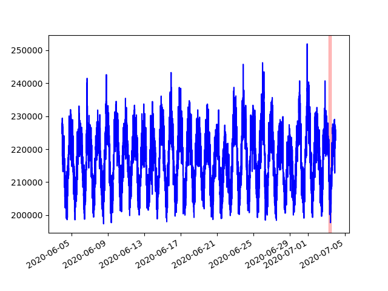

Anomaly Detection for Streaming data¶
Luminaire WindowDensityModel implements the idea of monitoring data over comparable windows instead of tracking individual data points as outliers. This is a useful approach for tracking anomalies over high frequency data, which tends to show a higher level of noise. Hence, tracking anomalies over streaming data essesntially means tracking sustained fluctuations.

Although WindowDensityModel is designed to track anomalies over streaming data, it can be used to track any sustained fluctuations over a window for any frequency. This detection type is suggested for up to hourly data frequency.
Anomaly Detection: Pre-Configured Settings¶
Luminaire provides the capability to configure model parameters based on the frequency that the data has been observed and the methods that can be applied (please refer to the Window density Model user guide for detailed configuration options). Luminaire settings for the window density model are already pre-configured for some typical pandas frequency types and settings for any other frequency types should be configured manually (see the user guide for Streaming Anomaly Detection Models).
>>> from luminaire.model.window_density import WindowDensityHyperParams, WindowDensityModel
>>> print(data)
raw interpolated
index
2020-05-25 00:00:00 10585.0 10585.0
2020-05-25 00:01:00 10996.0 10996.0
2020-05-25 00:02:00 10466.0 10466.0
2020-05-25 00:03:00 10064.0 10064.0
2020-05-25 00:04:00 10221.0 10221.0
... ... ...
2020-06-16 23:55:00 11356.0 11356.0
2020-06-16 23:56:00 10852.0 10852.0
2020-06-16 23:57:00 11114.0 11114.0
2020-06-16 23:58:00 10663.0 10663.0
2020-06-16 23:59:00 11034.0 11034.0
>>> hyper_params = WindowDensityHyperParams(freq='T').params
>>> wdm_obj = WindowDensityModel(hyper_params=hyper_params)
>>> success, model = wdm_obj.train(data=data)
>>> print(success, model)
(True, <luminaire_models.model.window_density.WindowDensityModel object at 0x7f8cda42dcc0>)
The model object contains the data density structure over a pre-specified window, given the frequency. Luminaire sets the following defaults for some typical pandas frequencies (any custom requirements can be updated in the hyperparameter object instance):
‘S’: Hourly windows
‘T’: 24 hours windows
‘15T’: 24 hours windows
‘H’: 24 hours windows
‘D’: 4 weeks windows
‘custom’: User specified windows
In order to score a new window innovation given the trained model object, we have to provide a equal sized window that represents a similar time interval. For example, if each of the windows in the training data represents a 24 hour window between 9 AM to 8:59:59 AM (next day) for last few days, the scoring data should represent the same interval of a different day and should have the same window size.

>>> scoring_data
raw interpolated
index
2020-06-17 00:00:00 1121.0 1121.0
2020-06-17 00:01:00 1091.0 1091.0
2020-06-17 00:02:00 1063.0 1063.0
2020-06-17 00:03:00 1085.0 1085.0
2020-06-17 00:04:00 1063.0 1063.0
... ... ...
2020-06-17 23:55:00 968.0 968.0
2020-06-17 23:56:00 995.0 995.0
2020-06-17 23:57:00 963.0 963.0
2020-06-17 23:58:00 968.0 968.0
2020-06-17 23:59:00 920.0 920.0
>>> scores = model.score(scoring_data)
>>> print(scores)
{'Success': True, 'ConfLevel': 99.9, 'IsAnomaly': False, 'AnomalyProbability': 0.6956745734841678}
Anomaly Detection: Manual Configuration¶
There are several options in the WindowDensityHyperParams class that can be manually configured. The configuration should be selected mostly based on the frequency that the data has been observed.
>>> from luminaire.model.window_density import WindowDensityHyperParams, WindowDensityModel
>>> print(data)
raw interpolated
index
2020-05-20 00:03:00 6393.451190 6393.451190
2020-05-20 00:13:00 6491.426190 6491.426190
2020-05-20 00:23:00 6770.469444 6770.469444
2020-05-20 00:33:00 6490.798810 6490.798810
2020-05-20 00:43:00 6273.786508 6273.786508
... ... ...
2020-06-09 23:13:00 5619.341270 5619.341270
2020-06-09 23:23:00 5573.001190 5573.001190
2020-06-09 23:33:00 5745.400000 5745.400000
2020-06-09 23:43:00 5761.355556 5761.355556
2020-06-09 23:53:00 5558.577778 5558.577778
>>>hyper_params = WindowDensityHyperParams(freq='custom',
detection_method='kldiv',
baseline_type="last_window",
min_window_length=6*12,
max_window_length=6*24*84,
window_length=6*24,
ma_window_length=24,
).params
>>> wdm_obj = WindowDensityModel(hyper_params=hyper_params)
>>> success, model = wdm_obj.train(data=data)
>>> print(success, model)
(True, <luminaire_models.model.window_density.WindowDensityModel object at 0x7f8d5f1a6940>)
The trained model object can be used to score data representing the same interval from a different day and having the same window size.
{kind=link}
>>> scoring_data
raw interpolated
index
2020-06-10 00:00:00 5532.556746 5532.556746
2020-06-10 00:10:00 5640.711905 5640.711905
2020-06-10 00:20:00 5880.368254 5880.368254
2020-06-10 00:30:00 5842.397222 5842.397222
2020-06-10 00:40:00 5827.231746 5827.231746
... ... ...
2020-06-10 23:10:00 7210.905952 7210.905952
2020-06-10 23:20:00 5739.459524 5739.459524
2020-06-10 23:30:00 5590.413889 5590.413889
2020-06-10 23:40:00 5608.291270 5608.291270
2020-06-10 23:50:00 5753.794444 5753.794444
>>> scores = model.score(scoring_data)
>>> print(scores)
{'Success': True, 'ConfLevel': 99.9, 'IsAnomaly': True, 'AnomalyProbability': 0.9999999851834622}